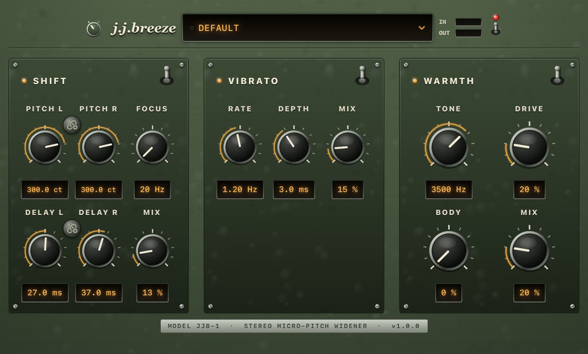

You know the one. Laid-back, a little late, never shiny. A second voice a few cents off — not a chorus, not a slap in your face. jj-breeze is the insert for that sound, and it costs nothing.

Free · no account, no trial, no unlock · Audio Unit, VST3 and a Standalone app · macOS 11+ and Windows 10/11
Close to the mic. A guitar in the room. A double that doesn’t announce itself. Load a preset and you’re in that neighborhood — original patches, not copies of any record.
Matching pitch a few cents up, short offset delays, a darker top. The namesake — that unhurried doubled voice the whole plug-in is named for. Start on Default.
The same close vocal, rolled off and moving just enough. Warmth carries the character, vibrato stays a hint. Load JJ Cajun Moon.
Left stays put. Right jumps +470 cents. Asymmetric, a little ghosted, the width doing something you notice. Load JJ Lies.
jj-breeze is an original effect. Preset names point at a feel, not a recreation of any recording, and the plug-in is not affiliated with any artist, label, or third-party vendor.
One installer per platform, with the plug-in formats and the standalone app inside. No account, no licence file, no trial that runs out.
Latest release v.1.0.0 · 28 Aug 2026 · free, no account needed
macOS 11 Big Sur or newer · Apple Silicon
/Library/Audio/Plug-Ins/Components/Library/Audio/Plug-Ins/VST3/ApplicationsWindows 10 or 11 · 64-bit
Program Files\Common Files\VST3Program Files\Gerov.zip — unpack it, then run the installer insideRestart your DAW, or rescan plug-ins. In Logic the Audio Unit shows up under Gerov → jj-breeze; everywhere else look for j.j.breeze in the VST3 list.
Both installers need an administrator password — they write to the machine-wide plug-in folders. On Windows, SmartScreen may ask you to confirm an installer it hasn’t seen often yet: More info → Run anyway.
An AAX build exists but is not in these installers: it needs Avid’s SDK and PACE signing. Build it yourself — see RELEASE.md.
The standalone app is a real host, so you can hear the effect before you open a DAW at all.
Double-click the .pkg on macOS or the .exe on Windows and pick what you want: the Audio Unit, the VST3, the standalone app — or all of them.
Restart the DAW so it rescans. Drop jj-breeze on a vocal, a guitar, a synth pad — anything that would take a second voice.
Each section has its own switch. Turn Vibrato and Warmth off for a clean slap or octave; leave them on for a darker, moving vocal. Knobs stay put when a section is off.
Shift and Vibrato blend in parallel from the dry signal. Warmth is the last pass on the sum. Turning one up does not eat the others.
The core. Each side gets its own pitch and its own delay tap. Same-sign pitch stays mono-compatible. Opposite signs is classic micro-shift width. Focus is a crossover: below it stays dry; only the band above is shifted and delayed.
A slow, continuous pitch wobble from a swept short delay — not a second copy of Shift’s static detune. It runs in parallel with Shift, from dry, so Mix here never steals from Shift Mix.
The last tone stage on the fully summed signal: chest, darkness, then gentle saturation. Not another doubler. Leave it off when you want an open, twangy top.
Raise Focus to keep width off the bass. Drop it toward 20–25 Hz when a big pitch change or a slap should cover the full band. Mix only blends; Focus decides what gets processed.
The header carries undo/redo (⌘Z / Ctrl+Z) over every knob, switch and preset load, plus an A/B pair for flipping between two versions of a patch while you dial it in. Handy in a DAW, essential in the standalone app.
Each section has its own bat switch and indicator lamp. Throwing it bypasses that section without wiping knobs — the DSP keeps running, so switching back is click-free. BYPASS in the header gives you the untouched dry signal.
The rotary selector left of the wordmark turns the panel from Field Green to Slate — hammered military enamel or blue-grey gunmetal, with the hardware and lamp colours to match. Your choice is remembered per machine.
The preset window holds the factory patches and your own: SAVE writes the current knobs under a name, DEL removes one of yours. The name dims as soon as you tweak something, so it never claims to show what isn’t loaded.
Hammered enamel, screwed-down sub-plates, bakelite knobs in chrome collars, bat switches and smoked-glass readouts — all drawn procedurally, so the window stays sharp at any size you drag it to. Double-click a knob for its default.
The same list in the panel’s preset window and in your host’s preset menu. SAVE keeps your own next to them.
The breeze: matching +300 cents, short offset delays, a light swirl and a little Warmth. The easy doubled voice.
The dark, rolling one. Warmth — not vibrato — carries the character: rolled-off top, a hint of movement underneath.
One side stays. The other lifts +470 cents. The ghost in the right channel, no vibrato and no warmth in the way.
Matching −300 cents with Focus down for a full-band drop, Body up for chest, and a darker Tone on top.
Pitch L −1200, Pitch R at 0. Reads like an old octave pedal panned across the stereo field.
Pitch at 0, Delay 110 / 115 ms, Focus down. One clean, bright repeat — nothing else.
−700 cents with Body and Drive pushed further, Tone at 2.5 kHz. Growly, low, no wobble.
SAVE writes the current panel to disk next to the factory list, so the preset count your host sees never changes.
Install, restart your DAW, and look for j.j.breeze by Gerov. The Audio Unit is type aufx, subtype Jjbz, manufacturer Grov.
Audio FX → Audio Units → Gerov → jj-breeze. The VST3 works too if you prefer it; Logic only lists the AU.
The VST3 lands in the standard folder both platforms scan, so it appears after the next plug-in rescan — on macOS and Windows alike.
The standalone app runs the same panel on your audio interface — pick an input, play, and dial the sound in before you commit to a session.
Close to the mic. A second voice a few cents off. Never a chorus.
macOS 11+ and Windows 10/11 · AU, VST3 and Standalone · Free, with no account and nothing to unlock.